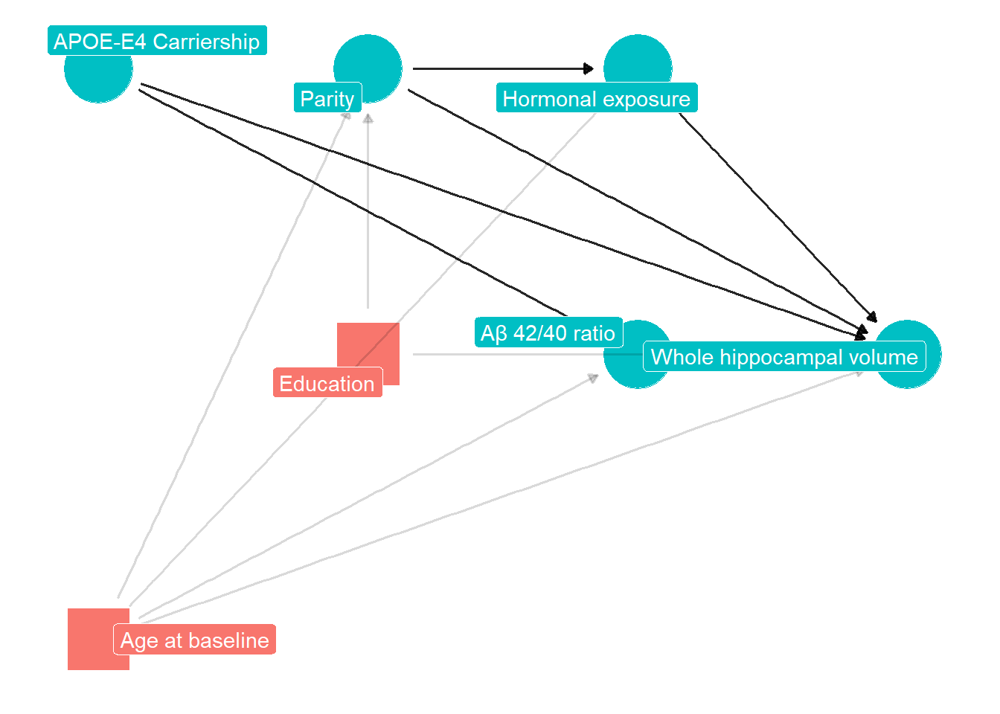
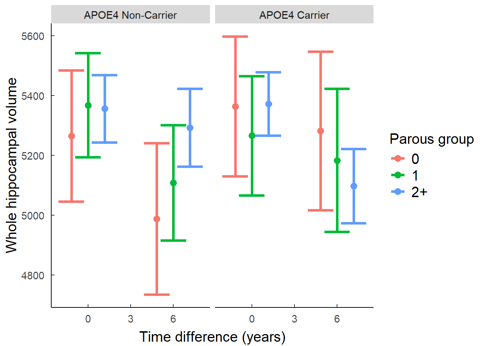

Parity and AD specific neurodegeneration
1 Abstract
300 words
2 Introduction
Alzhimer’s disease (AD) is a neurodegenerative disorder clinically characteized by progressive memory loss. Ageing, carring the apolipoprotein E E4 (APOE4) and having female chromosomal sex are three established risk factors for the typical late-onset of this disease [1]. Carrying one copy of APOE4 increases AD risk by three to four fold, whilst carrying 2 copies skyrockets that risk to 10 folds [2]. Women have a higher incidence of late-onset AD dementia [3] and show faster cognitive decline after diagnosis of MCI or AD dementia [4]. Amongst APOE4 carriers, women exhibit an increased risk of conversion from healthy ageing to MCI, or from MCI to AD dementia between the ages of 65 to 75 [5,6]. Thus to understand sex differences in AD risk it is essential to understand how these non-modifyable risk factors interact.
The hippocampus is one of the first regions affected by AD, and whole hippocampal volume is a hallmark predictor of conversion from MCI to AD [7]. one of its particularity resides in its display of continuous neurogenesis throughout adult life [8]. The hippocampus is not a homogenous structure, but is divided in anatomical subfields that show different molecular makeup () and a degree of cognitive specialization [9]. Altered neurogenesis is linked to AD related neuropathology and impairments in cognition [10].
Pregnancy provokes significant changes to brain structure via major hormonal changes which impact the hippocampus in a lasting way [11]. Animal models show decreased neurogenesis in the hippocampus during gestation and postpartum period [[12]; [13]]. In humans, pregnancy is associated with a total hippocampal volume loss which then recovers in the next two years post partum [14]. Currently, there is a lack of data on how these mid-life changes affect the hippocampus in older adults, and wether they have consequences on cognition.
Evidence on how previous pregnancies influence ageing and AD risk is conflicting. Previous parity has been linked with less apparent brain ageing [15]. But amongst epidemiological studies that explored a potential association between parity and AD, some report a link between multiparity and greater cognitive decline [16], whilst other report no link or the opposite findings [17,18.,19] To our knowledge, only two studies so far have included AD biomarkers as a dependent variable, and whilst one repports a positive relationship between amyloid plaques and parity, the other does not[20,21]. Together, these studies indicate that although a link might exist between parity and AD, it is not well characterized and shows mixed direction of effect.
Recently, Bee and colleagues (2024) [22] presented the first evidence for an interaction between APOE4 and parity in animals. Using wildtype and humanized APOE4 knock-in middle aged female rats, they found that whilst parity increased neurogenesis in wildtype rats, it decreased it in APOE4 rats, especially in the ventral dentate gyrus. In addition to this, parous APOE4 rats showed increased use of allocentric strategy instead of spatial when solving spatial memory tasks, suggesting a decreased recruitment of the hippocampus. Importantly, this aligns with previous literature reporting a link between AD dementia and decreased use of spatial strategy in humans [23]. To our knowledge, no study has explored this interaction of APOE4 and parity on hippocampal structure in humans.
Our objective was to explore potential links and mechanisms through which pregnancy interacts with AD pathology in healthy postmenopausal women at risk of AD. To this end, we used hippocampal volumetry drawn from MRI data, biomarker data, cogntive data and reproductive data from two initial visits from the ALFA+cohort. We hypothesized that parous women would show decreased whole hippocampal volume loss but this relationship would be inversed in APOE4 carriers.
3 Methods
3.1 Study design
This study was realised within the context of the The ALFA+ project, a longitudinal observational cohort of healthly middle aged adults. This project currently takes place in the city of Barcelona, Spain, at the BarcelonaBeta Brain Research Center. Visit 1 was collected between 2013 and 2015, and Visit 2 between 2016 and 2019 Visit 3 is still undergoing. The ALFA study protocol was approved by the Independent Ethics Committee Parc de Salut Mar Barcelona (and registered at Clinicaltrials.gov, NCT01835717). For a more detailed description of the cohort see Molinuevo et al.[24].
3.2 Participants
In brief, inclusion criteria were being cognitively normal, Spanish and/or Catalan-speaking, being aged between 45 and 74 years and agreing with the study procedures and tests. A close relative was involved in the volunteer’s functional evaluation and both of them had to grant their written informed consent. Exclusion criterias Exclusion criteria were (1) Cognitive performance falling outside the established cutoffs, (2) a Clinical Dementia Rating above 0, (3) major psychiatric disorders (according to DSM-IV-TR), (4) Severe auditory and/or visual disorder, neurodevelopmental and/or psychomotor disorder, (5) Significant diseases that could currently interfere with cognition, (6) neurological disorders, (7) Brain injuries and (8) a suspected pattern of family autosomal dominant AD.
In addition to the above exclusion criteria, women with history of cardiovascular related gestational disease, such as preeclampsia, were excluded from our sample for analysis.
Participants were recruited via advertisement campaigns in newspapers and followed-up via email/phonecalls.
- Loss to follow-up? do we have data on that?
3.3 Procedures
3.3.1 Demographics
Demographic data was collected via oral questions administered by a clinician. Sex was self reported, as well as gender and participants could choose from three options: male, female, or … Race and ethnicity were also self-reported. There was no report of biological sex and gender being different in our cohort, therefore the word ‘women’ will be used to refer to our female subjects.
Reproductive variables, such as number of biological kids, age at menopause, age at menarche and number of abortions, were self-reported at the baseline visit. In the subsequent visits, participants were also asked about hormonal replacement therapy.
Social variables such as years of education, household income, occupational attainment and civil status were also self-reported at baseline visit.
3.3.2 Imaging data preprocessing
GMV changes were computed voxel-wise using the pairwise longitudinal registration implemented in the statistical parametric mapping software (SPM, version 12) (https://www.fil.ion.ucl.ac.uk/spm/software/spm12/). The procedure involves a high-dimensional warping between consecutive T1-weighted scans, combining diffeomorphic and rigid-body registrations and incorporating a correction for field inhomogeneities. This procedure yields for each subject a parametric whole brain map encoding at each voxel the local tissue deformations that have occurred over time [25]. Individual deformation maps were inspected for sample homogeneity using the computational anatomy toolbox (CAT12) (http://dbm.neuro.unijena.de/cat/) and normalized to the Montreal Neurological Institute (MNI) space using diffeomorphic image registration with DARTEL30 and spatially smoothed with an 8-mm full width at half maximum (FWHM) Gaussian kernel before being submitted to group statistical analyses.
3.3.3 Automatic Segmentation of Hippocampal Subfields
Automatic Segmentation of Hippocampal Subfields (ASHS) software [26] was used on the T1 and inversion recovery (IR) images to segment the hippocampal formation in the following sub-regions: Brodmann areas 35 and 36, cornu Ammonis (CA) 1, 2 and 3, dentate gyrus (DG), entorhinal cortex (ERC), parahippocampus (PHC), subiculum (SUB), and sulcus (SUL). All segmentations were visually inspected before proceeding with the statistical analyses.
3.3.4 Lumbar puncture
CSF was collected by lumbar puncture between 9 and 12 a.m. in polypropylene tubes. Samples were processed within 1 hour and centrifuged at 4°C for 10 minutes at 2000 g, stored in polypropylene tubes and frozen at -80°C. Core AD biomarkers (namely Aß42, Ab40, total Tau, and p tau) and other molecules of interest (such as YKL-40, neurogranin and Ab oligomers) were analyzed and determined in Prof. Kaj Blennow’s laboratory (Institute ofNeuroscience and Physiology, Department of Psychiatry and Neurochemistry, The Sahlgrenska Academy at the University of Gothenburg, Sweden).
3.3.5 Cognitive measures
The Preclinical Alzheimer Cognitive Composite (PACC) was developed to detect subtle cognitive changes in individuals who may be in the pre-clinical stages of AD [27], and includes elements of the Memory Binding Test, the Coding subtest of WAIS-IV, and semantic fluency. Z-scores were computed for Visit 1 and 2.
3.4 Statistical analyses
3.4.1 Linear regression models
Statistical analyses were carried using R v4.5.1. Our exposure variables included parity, time and Aβ positivity. Parity was defined as number of biological children and used as a continuous variable (1, 2, 3, 4+). In order to explore the potential non-linear effects, we grouped subjects by nulliparous, primiparous and multiparous. Time was assessed as number of days between either MRI scans or cognitive testing sessions at visit 1 and 2. Aβ pathology was defined as the ratio of CSF Aß42 over CSF Aß40. All analyses were stratified by sex.
To identify other potential confounders in our primary analyses, we used directed acyclic graph (DAG) methodology to aid with covariate selection. Using Pearl’s backdoor criteria, we decided to covary for education in all our analyses given that the effet of this variable on both the exposure and outcome variable, therefore making it a cofounding variable in our analyses along with age at baseline. All linear regressions were also adjusted for age at baseline, time and CSF Aß42/40 ratio. Linear regressions with hippocampal subfield volumes as outcomes were adjusted for Total Intracranial Volume (TIV).
We first carried out linear mixed-effect models including parity and time as exposure and hippocampal volume as outcome. Covariates weere age at baseline visit, education, CSF Aß42/40, and total intracranial volume. APOE4 carriership were then introduced as a moderator. These analyses were reproduced using PACC as outcome. For post-hoc analyses we tested the same interaction on hippocampal subfields. Due to the exploratory nature of these subsequent analyses, results are reported uncorrected.
Data imputation methods were implemented using the mice package in R (v.3.18.0) on covariates, but not exposure or outcome variables. For continous variables, predictive mean matching with 5 donors was used. For categorical variables, logistic regression was used.
This analysis is opportunistic, in the sense that the ALFA+ cohort was designed to provide data for a wide range of questions. Consequently, this study sample size limits the kind of analysis we are able to perform. Because of this, we chose not to include results from stratified analysis in this paper because of a high chance of yielding type II errors.
4 Results
4.1 Descriptive results
| Number of childbirths | N | 0 N = 661 |
1 N = 931 |
2 N = 2141 |
3 N = 471 |
4 N = 121 |
p-value2 |
|---|---|---|---|---|---|---|---|
| Age at first visit, Mean (SD) | 432 | 58.5 (55.3, 63.1) | 62.5 (57.6, 64.9) | 62.5 (58.8, 65.1) | 61.2 (57.7, 64.7) | 63.4 (59.8, 66.9) | <0.001 |
| Aβ status, Count (%) | 383 | 0.4 | |||||
| Aβ- | 41 (71%) | 59 (71%) | 114 (62%) | 32 (70%) | 6 (50%) | ||
| Aβ+ | 17 (29%) | 24 (29%) | 70 (38%) | 14 (30%) | 6 (50%) | ||
| APOE-E4 carrier, Count (%) | 431 | 0.11 | |||||
| Carrier | 33 (51%) | 44 (47%) | 129 (60%) | 27 (57%) | 4 (33%) | ||
| Non-Carrier | 32 (49%) | 49 (53%) | 85 (40%) | 20 (43%) | 8 (67%) | ||
| Time between visits (years), Mean (SD) | 353 | 3.24 (3.01, 3.47) | 3.34 (3.13, 3.58) | 3.15 (2.97, 3.44) | 3.24 (3.03, 3.65) | 3.50 (3.03, 3.76) | 0.023 |
| Education (years), Mean (SD) | 432 | 15.5 (12.0, 18.0) | 12.0 (11.0, 17.0) | 12.0 (10.0, 17.0) | 16.0 (11.0, 18.0) | 12.0 (9.0, 17.0) | 0.009 |
| 1 Median (Q1, Q3); n (%) | |||||||
| 2 Kruskal-Wallis rank sum test; Fisher’s exact test; Pearson’s Chi-squared test | |||||||
432 participants from the ALFA+ project were included in our analyses, of which 254 are women. Visit 1 included MRI data from 411 participants, cognitive testing from 417 participants and CSF biomarkers from 400 participants. Visit 2 included MRI data from 353 participants, cognitive testing from 367 participants and CSF biomarkers from 277 participants. Average time between visits was 3.32 years.
Table 1 shows demographics and characteristics of the ALFA+ cohort for all aprticipants included in Visit 1, grouped by parity. Participants with higher parity were significantly more likely to be older. Participants with more number of childbirths were significantly more likely to have less years of education. No difference was seen between groups regarding Aβ status and APOE-ε4 carriership.
4.2 Whole Hippocampal volume
We found no significant independent effect of parity on whole hippocampal volume. However, a highly significant parity, APOE-E4 and time interaction was found (β = -34.656, SE = 8.446, p = 6.06^{-5}), such that over time, homozygote APOE-E4 carrier women showed a negative relationship between parity and hippocampal volume, whilst non-carriers women showed the opposite. When grouping the variable by nulliparous, primiparous or multiparous, that same three-way interaction was stronger and only significant for multiparous women (β = 2.84, SE = 18.515, p = 0.878) (Figure X).


No main effect of parity or interaction with APOE-E4 carriership was found in men.
4.3 Cognitive trajectory
The interaction between time, APOE4 and parity was not significant. However, the interaction between parity and APOE4 yielded a weak trend (ß = -0.156, p= 0.094). In comparison, using parous group as an interaction term did no yield any significant results.
No significant effect was found in men.

4.4 Post-hoc analyses
4.4.1 Influence of Amyloid
4.4.2 Hippocampal subfields
Similarly, no significant main effect of parity was found in any of the subfields. However, the 3-way interaction between APOE-E4 carrership, time and parity showed a significant effect on the CA1 volume (β = -13.846, SE = 6.429, p = 0.033), CA2 (β = -0.776, SE = 0.245, p = 0.002), subiculum (β = -4.346, SE = 1.828, p = 0.018), entorhinal cortex (β = -9.673, SE = 4.18, p = 0.022), and a trend in the dentate gyrus (β = -12.059, SE = 6.675, p = 0.072). The direction of the effect followed the same as for the whole hippocampus, where Aβ- women showed a positive relationship between parity and hippocampal volume over time, whilst Aβ- women showed the opposite (Figure X) - should I include the parous gorup results too? or adds too much complexity?

4.4.3 Stratification
5 Discussion
Our study aimed to investigate the impact of parity on hippocampal subfield volumes and relation to the APOE4 allele in post-menopausal women at risk of AD. Our results suggest that parity and AD specific genotype interact in women to impact hippocampal volume loss. In our sample, multiparous APOE4 non-carriers showed less hippocampus volume decline, whilst multiparous APOE4 carriers showed worse cognitive decline. These rseults show evidence of an interaction between parity and AD related genetic risk in women, which is associated in volume loss in a brain region which is a prime marker of AD. Essentially, this evidence strongly suggests there is a clear biological component to the interaction between parity and AD risk in women.
When using the categorical grouping for parity, results showed significantly bigger effect in multiparous women. This could indicate that the cumulative effects of parity are only significantly interact with genetic risk after having had more than one child. However, it is important to note that the multiparous groups had a fairly larger number of observations than the nulliparous or primiparous group, therefore lack of significance might indicate a power issue when performing the gorup interaction.
The AFLFA+ cohort is an ideal cohort to test this interaction, given the participants are enriched in genetic AD risk, As such, about 40% of our cohort is a carrier of the APOE4 allele, meaning group interactions are very balanced statistically.
Our findings reproduce the ones found by Bee and colleagues. Similarly, APOE4 carriers show detrimental effects of parity on hhippocampal volume trajectory. Although we did not replicate their findings on memory, this could be due to the relative short amount of time between both visits, on 3 years in average. However, another hypothesis could be that there are intricate social factors at play in humans revolving around parity, which could be influencing cognitive resilience. A previous study done with the UK biobank also finds no effect of the interaction between APOE4 and parity on cognitive score (lindseth et al 2023), although their battery of test is limited.
Our post-hoc analysis of hippocampal subfields shows the most affected regions are the CA1, CA2, subiculum and enthorinal cortex, and a trend in the dentate gyrus. Given Bee’s results, one could expect a stornger effect in the dentate gyrus, given most of the effect of parity in neurogenesis would reside in this subfield. The strong effect on parts of the cornu ammonis also reveals ageing mechanism.
Subiculum linked with early AD apthology. and ERC?
Older EPOE4 carriers show reduced hippocampal volume compared with non-carriers, especially in the CA1 and subiculum tissue [28].
A limitation of this study is the lack of a third timepoint, to examine potential non linear effects throuhg time. Some preliminary evidence suggests that during pregnancy, hippocampal reduction pattern might follow different progresison curves depending on the subfield, with the CA showing a U-curved shaped loss pattern and the para-hippocampal cortex (PHC) a linear pattern [29].
Another limitation is statistical power. Although the ALFA+ cohort draws its strenght in the richness of the information collected form its participants, but its size remains limites for complex analyses. The stratification of analyses by gender already reduces our sample by half, and gorup interaction by APOE4 splits it further.
Another limitation is that the ALFA+ cohort is very homogeneous: participants are majoritarily caucasian whites, from middle and upper-middle class background, who were selected due to their impeccable health records. Therefore, we must use cuation when generalising our results to a wider population. Additionally, our sample lacked highly multiparous individuals. Previous studies on the effect of parity on cognition and neurodegeneration have found an inverted u-shaped relation between parity and outcome measures, indicating that our lack of women having had more than 4 children might be leading to an incomplete picture of the phenomenon.
6 Appendix
6.1 MRI data acquisition
MRI scans were acquired on a in-house 3.0 T scanner (GE Discovery MR750 W 3 T) using the same protocol for all participants, which included one T1- and three T2- weighted sequences. The 3D-T1w sequence was designed with an isotropic voxel size of1mm3 and a matrix size of256x256x160 (TR/TE/TI = 8.0/3.7/450 ms, NSA = 1, flip angle = 8°). Three 3D-T2w sequences, with a voxel size of1 mm× 1 mm× 3 mm, were also used: fluid attenuation inversion recovery (FLAIR: TR/TE/ TI = 11,000/90/2600 ms, flip angle = 160°), fast spin echo (FSE: TR/TE = 5000/85 ms, flip angle = 110°) and, gradient echo (GRE: TR/TE = 1300/23 ms, flip angle = 15°). All scans were visually assessed to verify their quality and to detect incidental findings by a trained neuroradiologist and have been reported elsewhere (Brugulat-Serrat et al. 2017). At visit 1, ten participants were excluded due to the presence of a meningioma, as well as 37 participants due to susceptibility, motion artefacts or segmentation problems, resulting in a total of 561 images available for subsequent analysis. At Visit 2, … The medial temporal lobe atrophy was assessed by Medial Temporal Atrophy scale [30].
References
[1]
Riedel BC, Thompson PM, Brinton RD. Age, APOE and sex: Triad of risk of Alzheimer’s disease. The Journal of Steroid Biochemistry and Molecular Biology 2016;160:134–47. https://doi.org/10.1016/j.jsbmb.2016.03.012.
[2]
Corder EH, Saunders AM, Strittmatter WJ, Schmechel DE, Gaskell PC, Small GW, et al. Gene Dose of Apolipoprotein E Type 4 Allele and the Risk of Alzheimer’s Disease in Late Onset Families. Science 1993;261:921–3. https://doi.org/10.1126/science.8346443.
[3]
Beam CR, Kaneshiro C, Jang JY, Reynolds CA, Pedersen NL, Gatz M. Differences Between Women and Men in Incidence Rates of Dementia and Alzheimer’s Disease. Journal of Alzheimer’s Disease 2018;64:1077–83. https://doi.org/10.3233/jad-180141.
[4]
Ferretti MT, Iulita MF, Cavedo E, Chiesa PA, Schumacher Dimech A, Santuccione Chadha A, et al. Sex differences in Alzheimer disease the gateway to precision medicine. Nature Reviews Neurology 2018;14:457–69. https://doi.org/10.1038/s41582-018-0032-9.
[5]
Altmann A, Tian L, Henderson VW, Greicius MD. Sex modifies the APOE-related risk of developing Alzheimer disease. Annals of Neurology 2014;75:563–73. https://doi.org/10.1002/ana.24135.
[6]
Neu SC, Pa J, Kukull W, Beekly D, Kuzma A, Gangadharan P, et al. Apolipoprotein E Genotype and Sex Risk Factors for Alzheimer Disease. JAMA Neurology 2017;74:1178. https://doi.org/10.1001/jamaneurol.2017.2188.
[7]
Apostolova LG, Dutton RA, Dinov ID, Hayashi KM, Toga AW, Cummings JL, et al. Conversion of Mild Cognitive Impairment to Alzheimer Disease Predicted by Hippocampal Atrophy Maps. Archives of Neurology 2006;63:693. https://doi.org/10.1001/archneur.63.5.693.
[8]
Boldrini M, Fulmore CA, Tartt AN, Simeon LR, Pavlova I, Poposka V, et al. Human Hippocampal Neurogenesis Persists throughout Aging. Cell Stem Cell 2018;22:589–599.e5. https://doi.org/10.1016/j.stem.2018.03.015.
[9]
Mueller SG, Chao LL, Berman B, Weiner MW. Evidence for functional specialization of hippocampal subfields detected by MR subfield volumetry on high resolution images at 4T. NeuroImage 2011;56:851–7. https://doi.org/10.1016/j.neuroimage.2011.03.028.
[10]
Hollands C, Tobin MK, Hsu M, Musaraca K, Yu T-S, Mishra R, et al. Depletion of adult neurogenesis exacerbates cognitive deficits in Alzheimer’s disease by compromising hippocampal inhibition. Molecular Neurodegeneration 2017;12. https://doi.org/10.1186/s13024-017-0207-7.
[11]
Puri TA, Richard JE, Galea LAM. Beyond sex differences: short- and long-term effects of pregnancy on the brain. Trends in Neurosciences 2023;46:459–71. https://doi.org/10.1016/j.tins.2023.03.010.
[12]
Pawluski JL, Galea LAM. Reproductive experience alters hippocampal neurogenesis during the postpartum period in the dam. Neuroscience 2007;149:53–67. https://doi.org/10.1016/j.neuroscience.2007.07.031.
[13]
Eid RS, Chaiton JA, Lieblich SE, Bodnar TS, Weinberg J, Galea LAM. Early and late effects of maternal experience on hippocampal neurogenesis, microglia, and the circulating cytokine milieu. Neurobiology of Aging 2019;78:1–17. https://doi.org/10.1016/j.neurobiolaging.2019.01.021.
[14]
Hoekzema E, Barba-Müller E, Pozzobon C, Picado M, Lucco F, García-García D, et al. Pregnancy leads to long-lasting changes in human brain structure. Nature Neuroscience 2016;20:287–96. https://doi.org/10.1038/nn.4458.
[15]
Lange A-MG de, Barth C, Kaufmann T, Anatürk M, Suri S, Ebmeier KP, et al. The maternal brain: Region-specific patterns of brain aging are traceable decades after childbirth. Human Brain Mapping 2020;41:4718–29. https://doi.org/10.1002/hbm.25152.
[16]
Colucci M, Cammarata S, Assini A, Croce R, Clerici F, Novello C, et al. The number of pregnancies is a risk factor for Alzheimer’s disease. European Journal of Neurology 2006;13:1374–7. https://doi.org/10.1111/j.1468-1331.2006.01520.x.
[17]
Fox M, Berzuini C, Knapp LA, Glynn LM. Women’s Pregnancy Life History and Alzheimer’s Risk: Can Immunoregulation Explain the Link? American Journal of Alzheimer’s Disease & Other Dementias® 2018;33:516–26. https://doi.org/10.1177/1533317518786447.
[18]
Fox M, Berzuini C, Knapp LA. Cumulative estrogen exposure, number of menstrual cycles, and Alzheimer’s risk in a cohort of British women. Psychoneuroendocrinology 2013;38:2973–82. https://doi.org/10.1016/j.psyneuen.2013.08.005.
[19]
Wolfova K, Hubbard RA, Brennan Kearns P, Chang VW, Crane P, LaCroix AZ, et al. Number of children and risk of dementia: a cohort study. Journal of Epidemiology and Community Health 2024;79:280–7. https://doi.org/10.1136/jech-2024-222717.
[20]
Beeri MS, Rapp M, Schmeidler J, Reichenberg A, Purohit DP, Perl DP, et al. Number of children is associated with neuropathology of Alzheimer’s disease in women. Neurobiology of Aging 2009;30:1184–91. https://doi.org/10.1016/j.neurobiolaging.2007.11.011.
[21]
Jung JH, Lee GW, Lee JH, Byun MS, Yi D, Jeon SY, et al. Multiparity, brain atrophy, and cognitive decline. Frontiers in Aging Neuroscience 2020;12. https://doi.org/10.3389/fnagi.2020.00159.
[22]
Lee BH, Cevizci M, Lieblich SE, Ibrahim M, Wen Y, Eid RS, et al. Exploring the parity paradox: Differential effects on neuroplasticity and inflammation by APOEe4 genotype at middle age. Brain, Behavior, and Immunity 2024;120:54–70. https://doi.org/10.1016/j.bbi.2024.05.019.
[23]
Parizkova M, Lerch O, Moffat SD, Andel R, Mazancova AF, Nedelska Z, et al. The effect of Alzheimer’s disease on spatial navigation strategies. Neurobiology of Aging 2018;64:107–15. https://doi.org/10.1016/j.neurobiolaging.2017.12.019.
[24]
Molinuevo JL, Gramunt N, Gispert JD, Fauria K, Esteller M, Minguillon C, et al. The ALFA project: A research platform to identify early pathophysiological features of Alzheimer’s disease. Alzheimer’s & Dementia: Translational Research & Clinical Interventions 2016;2:82–92. https://doi.org/10.1016/j.trci.2016.02.003.
[25]
Ashburner J. A fast diffeomorphic image registration algorithm. NeuroImage 2007;38:95–113. https://doi.org/10.1016/j.neuroimage.2007.07.007.
[26]
Yushkevich PA, Pluta JB, Wang H, Xie L, Ding S-L, Gertje EC, et al. Automated volumetry and regional thickness analysis of hippocampal subfields and medial temporal cortical structures in mild cognitive impairment. Human Brain Mapping 2014;36:258–87. https://doi.org/10.1002/hbm.22627.
[27]
Donohue MC, Sperling RA, Salmon DP, Rentz DM, Raman R, Thomas RG, et al. The Preclinical Alzheimer Cognitive Composite. JAMA Neurology 2014;71:961. https://doi.org/10.1001/jamaneurol.2014.803.
[28]
Pievani M, Galluzzi S, Thompson PM, Rasser PE, Bonetti M, Frisoni GB. APOE4 is associated with greater atrophy of the hippocampal formation in Alzheimer’s disease. NeuroImage 2011;55:909–19. https://doi.org/10.1016/j.neuroimage.2010.12.081.
[29]
Pritschet L, Taylor CM, Cossio D, Faskowitz J, Santander T, Handwerker DA, et al. Neuroanatomical changes observed over the course of a human pregnancy. Nature Neuroscience 2024;27:2253–60. https://doi.org/10.1038/s41593-024-01741-0.
[30]
Scheltens P, Weinstein HC, Leys D. Neuro-imaging in the diagnosis of Alzheimer’s disease I. Computer tomography and magnetic resonance imaging. Clinical Neurology and Neurosurgery 1992;94:277–89. https://doi.org/10.1016/0303-8467(92)90175-3.